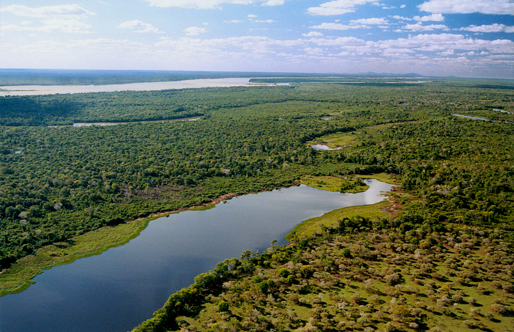

Ilha do bananal
A Ilha do Bananal é a maior ilha genuinamente fluvial do mundo, com cerca de vinte mil quilômetros quadrados de área, cercada pelos rios Araguaia e Javaés.
Com cerca de 20 mil km2, a Ilha do Bananal, maior ilha fluvial do mundo, fica em grande parte do ano submersa, ressurgindo exuberante a cada período de seca e trazendo, praticamente intocada, uma riquíssima biodiversidade – resultado do encontro entre a Floresta Amazônica e o Cerrado. Um dos grandes atrativos para turistas de todo Brasil é a emoção da pesca esportiva, podendo-se fisgar grandes exemplares de pirararas, pirarucus, surubins, caranhas, entre outros. Compõem a região, os municípios de Formoso do Araguaia, Gurupi, Lagoa da Confusão e Peixe.